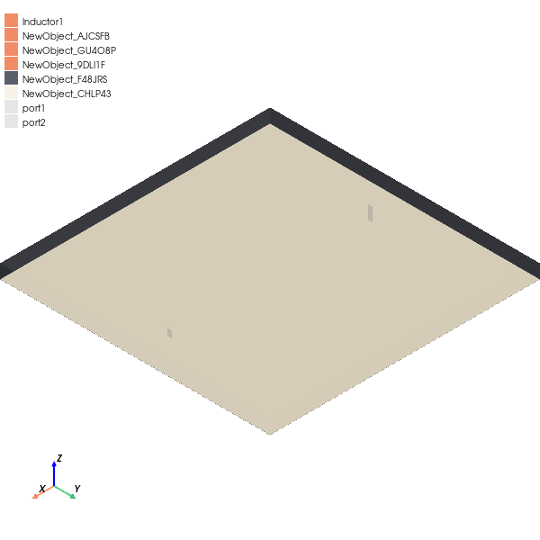
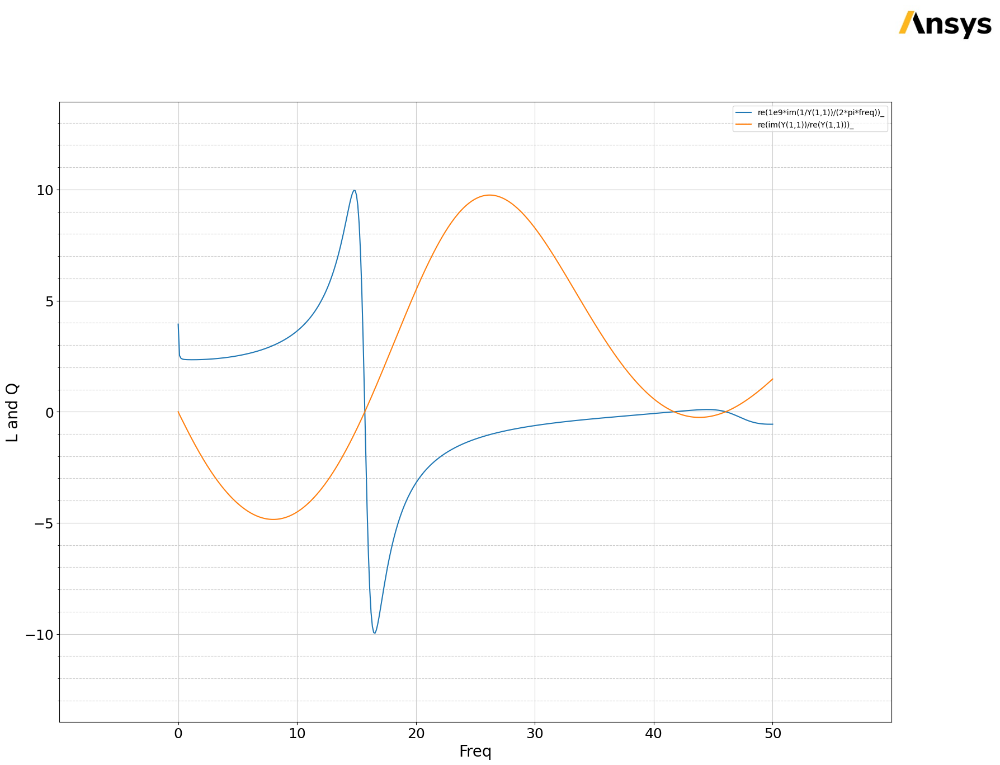

Download this example
Download this example as a Jupyter Notebook or as a Python script.
Spiral inductor#
This example shows how to use PyAEDT to create a spiral inductor, solve it, and plot results.
Keywords: HFSS, spiral, inductance, output variable.
Perform imports and define constants#
Perform required imports.
[1]:
import os
import tempfile
import time
[2]:
import ansys.aedt.core
Define constants.
[3]:
AEDT_VERSION = "2025.1"
NUM_CORES = 4
NG_MODE = False # Open AEDT UI when it is launched.
Create temporary directory#
Create a temporary directory where downloaded data or dumped data can be stored. If you’d like to retrieve the project data for subsequent use, the temporary folder name is given by temp_folder.name.
[4]:
temp_folder = tempfile.TemporaryDirectory(suffix=".ansys")
Launch HFSS#
Create an HFSS design and change the units to microns.
[5]:
project_name = os.path.join(temp_folder.name, "spiral.aedt")
hfss = ansys.aedt.core.Hfss(
project=project_name,
version=AEDT_VERSION,
non_graphical=NG_MODE,
design="A1",
new_desktop=True,
solution_type="Modal",
)
hfss.modeler.model_units = "um"
PyAEDT INFO: Python version 3.10.11 (tags/v3.10.11:7d4cc5a, Apr 5 2023, 00:38:17) [MSC v.1929 64 bit (AMD64)].
PyAEDT INFO: PyAEDT version 0.16.dev0.
PyAEDT INFO: Initializing new Desktop session.
PyAEDT INFO: Log on console is enabled.
PyAEDT INFO: Log on file C:\Users\ansys\AppData\Local\Temp\pyaedt_ansys_18a0ab2a-ee96-40ad-9edb-046358bcaacb.log is enabled.
PyAEDT INFO: Log on AEDT is disabled.
PyAEDT INFO: Debug logger is disabled. PyAEDT methods will not be logged.
PyAEDT INFO: Launching PyAEDT with gRPC plugin.
PyAEDT INFO: New AEDT session is starting on gRPC port 64134.
PyAEDT INFO: Electronics Desktop started on gRPC port: 64134 after 6.1859519481658936 seconds.
PyAEDT INFO: AEDT installation Path C:\Program Files\ANSYS Inc\v251\AnsysEM
PyAEDT INFO: Ansoft.ElectronicsDesktop.2025.1 version started with process ID 2116.
PyAEDT INFO: Project spiral has been created.
PyAEDT INFO: Added design 'A1' of type HFSS.
PyAEDT INFO: Aedt Objects correctly read
PyAEDT INFO: Modeler class has been initialized! Elapsed time: 0m 1sec
Define variables#
Define input variables. You can use the values that follow or edit them.
[6]:
rin = 10
width = 2
spacing = 1
thickness = 1
Np = 8
Nr = 10
gap = 3
hfss["Tsub"] = "6" + hfss.modeler.model_units
hfss["thickness"] = f"{thickness} {hfss.modeler.model_units}"
Standardize polyline#
Define a function that creates a polyline using the create_line() method. This function creates a polyline having a fixed width, thickness, and material.
[7]:
def create_line(pts):
hfss.modeler.create_polyline(
pts,
xsection_type="Rectangle",
xsection_width=width,
xsection_height=thickness,
material="copper",
)
Create spiral inductor#
Create the spiral inductor. This spiral inductor is not parametric, but you could parametrize it later.
[8]:
ind = hfss.modeler.create_spiral(
internal_radius=rin,
width=width,
spacing=spacing,
turns=Nr,
faces=Np,
thickness=thickness,
material="copper",
name="Inductor1",
)
PyAEDT INFO: Materials class has been initialized! Elapsed time: 0m 0sec
Center return path#
Center the return path.
[9]:
x0, y0, z0 = ind.points[0]
x1, y1, z1 = ind.points[-1]
create_line([(x0 - width / 2, y0, -gap), (abs(x1) + 5, y0, -gap)])
hfss.modeler.create_box(
[x0 - width / 2, y0 - width / 2, -gap - thickness / 2],
[width, width, gap + thickness],
material="copper",
)
[9]:
<ansys.aedt.core.modeler.cad.object_3d.Object3d at 0x2ab4c07a470>
Create port 1.
[10]:
hfss.modeler.create_rectangle(
orientation=ansys.aedt.core.constants.PLANE.YZ,
origin=[abs(x1) + 5, y0 - width / 2, -gap - thickness / 2],
sizes=[width, "-Tsub+{}{}".format(gap, hfss.modeler.model_units)],
name="port1",
)
hfss.lumped_port(assignment="port1", integration_line=ansys.aedt.core.constants.AXIS.Z)
PyAEDT INFO: Boundary Lumped Port Port_GCGUH6 has been created.
[10]:
<ansys.aedt.core.modules.boundary.common.BoundaryObject at 0x2ab3a46f010>
Create port 2.
[11]:
create_line([(x1 + width / 2, y1, 0), (x1 - 5, y1, 0)])
hfss.modeler.create_rectangle(
ansys.aedt.core.constants.PLANE.YZ,
[x1 - 5, y1 - width / 2, -thickness / 2],
[width, "-Tsub"],
name="port2",
)
hfss.lumped_port(assignment="port2", integration_line=ansys.aedt.core.constants.AXIS.Z)
PyAEDT INFO: Boundary Lumped Port Port_WXTBM6 has been created.
[11]:
<ansys.aedt.core.modules.boundary.common.BoundaryObject at 0x2ab4c07a710>
Create the silicon substrate and the ground plane.
[12]:
hfss.modeler.create_box(
[x1 - 20, x1 - 20, "-Tsub-thickness/2"],
[-2 * x1 + 40, -2 * x1 + 40, "Tsub"],
material="silicon",
)
hfss.modeler.create_box(
[x1 - 20, x1 - 20, "-Tsub-thickness/2"],
[-2 * x1 + 40, -2 * x1 + 40, -0.1],
material="PEC",
)
[12]:
<ansys.aedt.core.modeler.cad.object_3d.Object3d at 0x2ab4c07a9b0>
Set up model#
Create the air box and radiation boundary condition.
[13]:
box = hfss.modeler.create_box(
[
x1 - 20,
x1 - 20,
"-Tsub-thickness/2 - 0.1{}".format(hfss.modeler.model_units),
],
[-2 * x1 + 40, -2 * x1 + 40, 100],
name="airbox",
material="air",
)
hfss.assign_radiation_boundary_to_objects("airbox")
PyAEDT INFO: Boundary Radiation Rad__TBUUI8 has been created.
[13]:
<ansys.aedt.core.modules.boundary.common.BoundaryObject at 0x2ab4c07b1c0>
Assign a material override that allows object intersections, assigning conductors higher priority than insulators.
[14]:
hfss.change_material_override()
PyAEDT INFO: Enabling Material Override
[14]:
True
View the model.
[15]:
hfss.plot(
show=False,
output_file=os.path.join(hfss.working_directory, "Image.jpg"),
plot_air_objects=False,
)
PyAEDT INFO: Parsing C:/Users/ansys/AppData/Local/Temp/tmpdsyec4kr.ansys/spiral.aedt.
PyAEDT INFO: File C:/Users/ansys/AppData/Local/Temp/tmpdsyec4kr.ansys/spiral.aedt correctly loaded. Elapsed time: 0m 0sec
PyAEDT INFO: aedt file load time 0.0010423660278320312
PyAEDT INFO: PostProcessor class has been initialized! Elapsed time: 0m 0sec
PyAEDT INFO: Post class has been initialized! Elapsed time: 0m 0sec
C:\actions-runner\_work\pyaedt-examples\pyaedt-examples\.venv\lib\site-packages\pyvista\jupyter\notebook.py:37: UserWarning: Failed to use notebook backend:
No module named 'trame'
Falling back to a static output.
warnings.warn(

[15]:
<ansys.aedt.core.visualization.plot.pyvista.ModelPlotter at 0x2ab4c07b2b0>
Generate the solution#
Create the setup, including a frequency sweep. Then, solve the project.
[16]:
setup1 = hfss.create_setup(name="setup1")
setup1.props["Frequency"] = "10GHz"
hfss.create_linear_count_sweep(
setup="setup1",
units="GHz",
start_frequency=1e-3,
stop_frequency=50,
num_of_freq_points=451,
sweep_type="Interpolating",
)
hfss.save_project()
hfss.analyze(cores=NUM_CORES)
PyAEDT INFO: Linear count sweep Sweep_TZMGBS has been correctly created.
PyAEDT INFO: Project spiral Saved correctly
PyAEDT INFO: Key Desktop/ActiveDSOConfigurations/HFSS correctly changed.
PyAEDT INFO: Solving all design setups.
PyAEDT INFO: Key Desktop/ActiveDSOConfigurations/HFSS correctly changed.
PyAEDT INFO: Design setup None solved correctly in 0.0h 1.0m 22.0s
[16]:
True
Postprocess#
Get report data and use the following formulas to calculate the inductance and quality factor.
[17]:
L_formula = "1e9*im(1/Y(1,1))/(2*pi*freq)"
Q_formula = "im(Y(1,1))/re(Y(1,1))"
Define the inductance as a postprocessing variable.
[18]:
hfss.create_output_variable("L", L_formula, solution="setup1 : LastAdaptive")
[18]:
True
Plot the results using Matplotlib.
[19]:
data = hfss.post.get_solution_data([L_formula, Q_formula])
data.plot(
curves=[L_formula, Q_formula], formula="re", x_label="Freq", y_label="L and Q"
)
PyAEDT INFO: Solution Data Correctly Loaded.
[19]:


Export results to a CSV file
[20]:
data.export_data_to_csv(os.path.join(hfss.toolkit_directory, "output.csv"))
[20]:
True
Save project and close AEDT#
Save the project and close AEDT.
[21]:
hfss.save_project()
hfss.release_desktop()
# Wait 3 seconds to allow AEDT to shut down before cleaning the temporary directory.
time.sleep(3)
PyAEDT INFO: Project spiral Saved correctly
PyAEDT INFO: Desktop has been released and closed.
Clean up#
All project files are saved in the folder temp_folder.name. If you’ve run this example as a Jupyter notebook, you can retrieve those project files. The following cell removes all temporary files, including the project folder.
[22]:
temp_folder.cleanup()
Download this example
Download this example as a Jupyter Notebook or as a Python script.